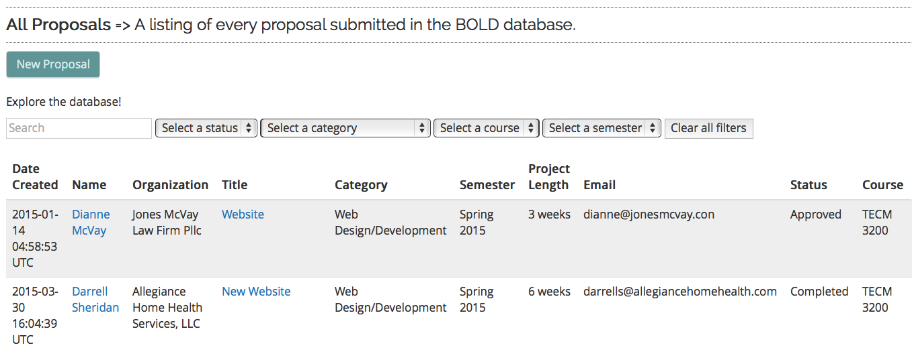
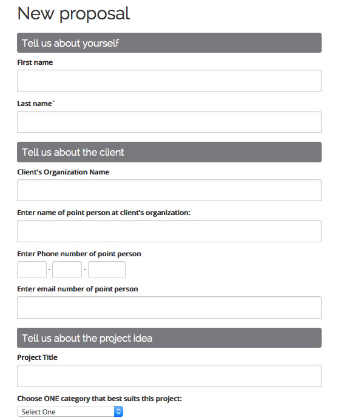

Chris Lam
Designer & Developer

Bold Projects Database
http://bold.heroku.com
Client:
University of North Texas, Department of Technical Communication
Overview:
The Department of Technical Communication runs semester-long client projects in which upper-level undergraduate courses partner with businesses on a substantial project. To manage these projects, the department needed a centralized repository where clients, instructors, and administrators could propose potential projects, and the projects could be matched to potential undergraduate courses.
Project Skills:
- Backend development - Ruby on Rails
- Frontend design and development
- User Interface Design
- Responsive design
Database and Information Design
Feature Description:
I implemented javascript sorting, search, and filtering for optimal user experience.

Responsive Design
Feature Description:
I created a fully responsive design for optimal access across all devices.

Usable Forms
Feature Description:
I designed beautiful forms for enhanced user experience.
